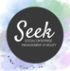
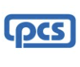

Vice President, Professional Development
Kappa Theta Pi — Indiana University
Finance · Consulting · Strategy
Student at Indiana University’s Kelley School of Business, majoring in Finance with a strong interest in consulting and financial strategy.
I’m a sophomore at the Kelley School of Business majoring in Finance, with a strong interest in consulting and financial strategy. I’m driven by curiosity—whether it’s exploring new places through travel, taking long walks to clear my mind, or diving into the problem‑solving side of business.
I enjoy using analytical thinking and collaboration to tackle real‑world challenges and am actively seeking opportunities to grow my experience in consulting and finance.
Kappa Theta Pi — Indiana University
TAMID Group at Indiana University
Trockman Microfinance Initiative
Trockman Microfinance Initiative

Social Enterprise Engagement at Kelley

Pioneer Consulting Services LLCPrime Healthcare
Ministry of Social Justice & Empowerment, Government of India
The best way to reach Arnav is through LinkedIn. Feel free to connect to talk about consulting, finance, or project opportunities.